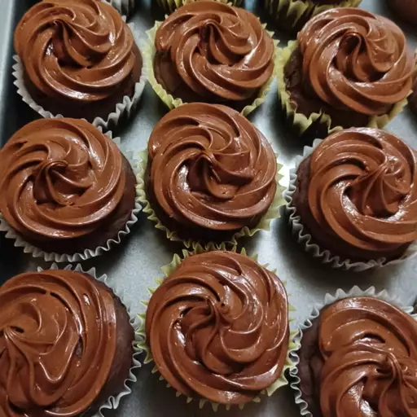

Chocolate Cupcakes
Chocolate cupcakes are the ultimate party food. These are super moist and bursting with rich, chocolaty flavor — and they're so easy to make. Frost these delicious chocolate cupcakes with buttercream or cream cheese frosting, or try royal icing or even whipped cream.
Ingredients
ol>
1 ⅓ cups all-purpose flour
¾ cup unsweetened cocoa powder
B2 teaspoons baking powder
¼ teaspoon baking soda
1 ½ cups white sugar
3 tablespoons butter, softened
1 cup milk
2 large eggs
Steps
- Preheat the oven to 350 degrees F (175 degrees C). Line a muffin pan with paper or foil liners.
- Sift together flour, cocoa, baking powder, baking soda, and salt.
- Cream together sugar and butter in a large bowl until light and fluffy. Add eggs, one at a time, beating well after each addition. Stir in the vanilla. Add flour mixture in two batches, alternating with milk; beat well. Spoon batter into the prepared muffin cups, filling each 3/4 full. /li>
- Bake in the preheated oven until a toothpick inserted into the centers comes out clean, 15 to 17 minutes. Remove from the oven and let cool before serving or frosting.